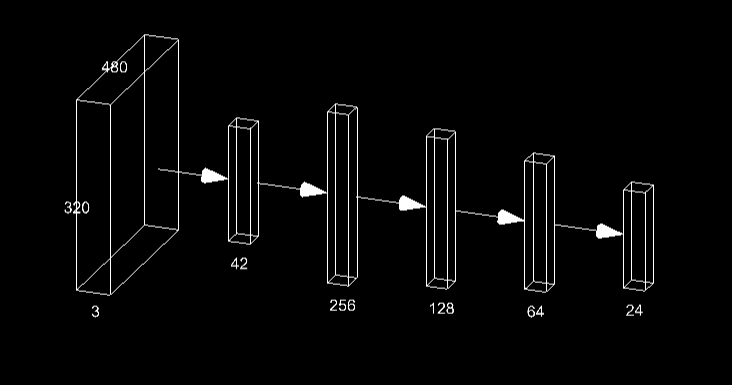

Hand sign language recognition is a crucial technology designed to bridge the communication gap between sign language users and non-signers. This system leverages machine learning to identify hand gestures and translate them into corresponding textual or verbal outputs, thereby fostering inclusivity and accessibility. The recognition pipeline is built on a robust architecture that processes hand keypoints extracted from video frames. These keypoints, represented as 2D coordinates, form the feature set for a neural network model that classifies gestures into 24 categories (e.g., the alphabet excluding J and Z, which involve motion).
Model Architecture
The model consists of fully connected layers designed to process the 42-dimensional input (representing hand keypoints). The architecture employs dropout regularization to prevent overfitting and utilizes the ReLU activation function for non-linearity. A softmax layer is used at the output to provide class probabilities, enabling accurate gesture recognition. This system can be integrated into various applications, including educational tools, accessibility services, and real-time communication systems.
Hand Signs
Results
The plot showing the accuracy (blue) and loss (red) across the epochs. The left y-axis represents accuracy, and the right y-axis represents loss, providing a clear visualization of the model's training performance over time.
Application
Try out the deployed Hand Sign Language Recognition, Click 'Start Camera' to begin and see it in action!
I hope you enjoy using the application! It has been designed to provide an intuitive and seamless experience for recognizing hand signs, and I believe it will be both fun and educational. Whether you're learning sign language or testing your skills, the app aims to be a helpful and engaging tool. Feel free to explore its features, and let me know if you have any feedback or questions. Enjoy using it!